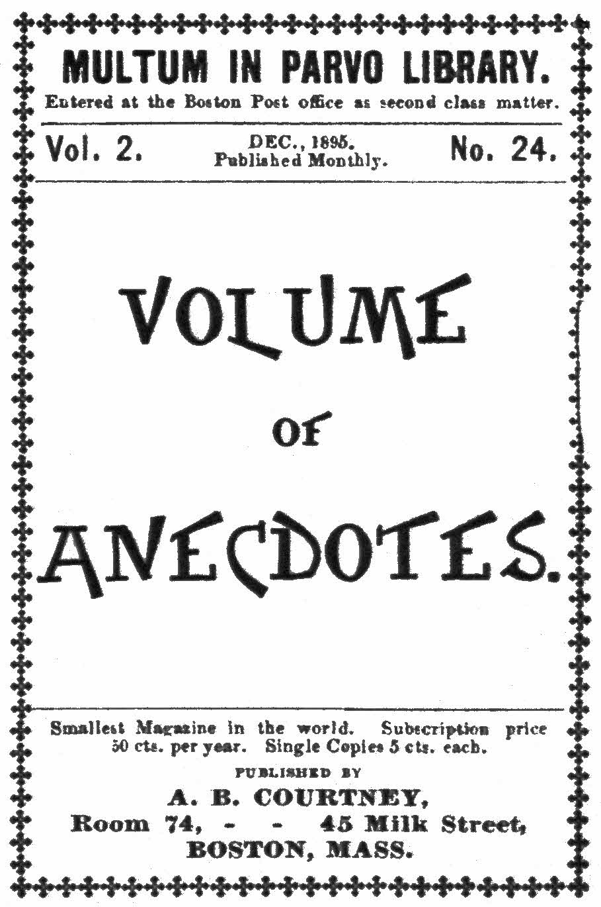

MULTUM IN PARVO LIBRARY.
Entered at the Boston Post office as second class matter.
Smallest Magazine in the world. Subscription price
50 cts. per year. Single Copies 5 cts. each.
PUBLISHED BY
A. B. COURTNEY,
Room 74, 45 Milk Street,
BOSTON, MASS.
[2]
Many humorous incidents, says a writer in the Century Magazine, occurred on battlefields. A Confederate colonel ran ahead of his regiment at Malvern Hill, and, discovering that the men were not following him as closely as he wished, he uttered a fierce oath and exclaimed: “Come on! Do you want to live forever?” The appeal was irresistible, and many a poor fellow who had laughed at the colonel’s queer exhortation laid down his life soon after.
A shell struck the wheel of a Federal fieldpiece toward the close of the engagement at Fair Oaks, shivering the spokes and dismantling the cannon. “Well, isn’t it lucky that didn’t happen before we used up all our ammunition,” said one of the artillerists as he crawled from beneath the gun.
When General Pope was falling back before Lee’s advance in the Virginia Valley, his own soldiers thought his bulletins and orders somewhat[3] strained in their rhetoric. At one of the numerous running engagements that marked the disastrous campaign, a private in one of the Western regiments was mortally wounded by a shell. Seeing the man’s condition, a chaplain knelt beside him, and, opening his Bible at random, read out Sampson’s slaughter of the Philistines with the jaw-bone of an ass. He had not quite finished, when, as the story runs, the poor fellow interrupted the reading by saying: “Hold on, chaplain. Don’t deceive a dying man. Isn’t the name of John Pope signed to that?”
A column of troops was pushing forward over the long and winding road in Thoroughfare Gap to head off Lee after his retreat across the Potomac at the close of the Gettysburg campaign. Suddenly the signal officer who accompanied the general in command discovered that some of his men, posted on a high hill in the rear, were reporting the presence of a considerable body of Confederate troops on top of the bluffs to their right. A halt was at once sounded, and the leading brigade ordered forward to uncover the enemy’s position. The regiments were soon scrambling up the steep incline, officers and men gallantly racing to see who could reach the crest first. A young lieutenant and some half dozen men gained the advance, but at the end of what they deemed[4] a perilous climb they were thrown into convulsions of laughter at discovering that what the signal men took for Confederate troops were only a tolerably large flock of sheep. As the leaders in this forlorn hope rolled on the grass in a paroxysm of merriment they laughed all the louder at seeing the pale but determined faces of their comrades, who, of course, came up fully expecting a desperate hand-to-hand struggle. It is perhaps needless to say the brigade supped on mutton that evening.
As the army was crossing South Mountain the day before the battle of Antietam, General McClellan rode along the side of the moving column. Overtaking a favorite Zouave regiment, he exclaimed, with his natural bonhommie: “Well, and how is Old Fifth this evening?” “First-rate, General,” replied one of the Zouaves. “But we’d be better off if we weren’t living so much on supposition.” “Supposition?” said the General, in a puzzled tone. “What do you mean by that?” “It’s easily explained, sir. You see we expected to get our rations yesterday; but as we didn’t, we’re living on the supposition that we did.” “Ah, I understand; you shall have your rations, Zouzous, to-night,” replied the General, putting spurs to his horse to escape the cheers of his regiment. And he kept his promise.
[5]
Many years have now passed, writes General Chamberlain, of Maine, since “Fredericksburg.” Of what then was, not much is left but memory. Faces and forms of men and things that then were have changed—perchance to dust. New life has covered some; the rest look but lingering farewells.
But, whatever changes may beautify those storm-swept and barren slopes, there is one character from which they can never pass. Death gardens, haunted by glorious hosts, they must abide. No bloom can there unfold which does not wear the rich token of the inheritance of heroic blood; no breeze be wafted that does not bear the breath of the immortal life there breathed away.
Of all that splendid but unavailing valor no one has told the story; nor can I. The pen has no wing to follow where that sacrifice and devotion sped their flight. But memory may rest down on some night scenes too quiet and sombre with shadow to be vividly depicted, and yet which have their interests from very contrast with the tangled and lurid lights of battle.
The desperate charge was over. We had not reached the enemy’s fortifications, but only that[6] fatal crest where we had seen five lines of battle mount but to be cut to earth as by a sword-swoop of fire. We had that costly honor which sometimes falls to the “reserve”—to go in when all is havoc and confusion, through storm and slaughter, to cover the broken and depleted ranks of comrades and take the battle from their hands. Thus we had replaced the gallant few still lingering on the crest, and received that withering fire which nothing could withstand by throwing ourselves flat in a slight hollow of ground within pistol shot of the enemy’s works, and mingled with the dead and dying that strewed the field, we returned the fire till it reddened into night, and at last fell away through darkness and silence.
But out of that silence from the battle’s crash and roar rose new sounds more appalling still; rose or fell, you knew not which, or whether from the earth or air; a strange ventriloquism, of which you could not locate the source, a smothered moan that seemed to come from distances beyond reach of the natural sense, a wail so far and deep and wide, as if a thousand discords were flowing together into a keynote weird, unearthly, terrible to hear and bear, yet startling in its nearness; the writhing concord broken by cries for help, pierced by shrieks of paroxysm; some begging for a drop of water, some calling on God[7] for pity; and some on friendly hands to finish what the enemy had so horribly begun; some with delirious, dreamy voices murmuring loved names, as if the dearest were bending over them; some gathering their last strength to fire a musket to call attention to them where they lay helpless and deserted; and underneath all the time, the deep bass note from closed lips too hopeless or too heroic to articulate their agony.
Who could sleep, or who would? Our position was isolated and exposed. Officers must be on the alert with their command. But the human took the mastery of the officials; sympathy of soldiership. Command could be devolved, but pity not. So with a staff officer I sallied forth to see what we could do where the helpers seemed so few. Taking some observation in order not to lose the bearing of our own position, we guided our steps by the most pitious of the cries. Our part was but little—to relieve a painful posture, to give a cooling draught to fevered lips, to compress a severed artery, as we had learned to do, though in bungling fashion; to apply a rude bandage, which might yet prolong the life to the saving; to take a token or farewell message for some stricken home—it was but little, yet it was an endless task. We had moved to the right and rear of our own position—the part of the field immediately[8] above the city. The farther we went the more need and the calls multiplied.
Numbers half-awakening from the lethargy of death or of despair by sounds of succor, begged us to take them quickly to a surgeon, and, when we could not do that, imploring us to do the next most merciful service and give them quick dispatch out of their misery. Right glad were we when, after midnight, the shadowy ambulances came gliding along and the kindly hospital stewards, with stretchers and soothing appliances, let us feel that we might return to our proper duty.
The night chill had now woven a misty veil over the field. Fortunately, a picket fence we had encountered in our charge from the town had compelled us to abandon our horses, and so had saved our lives on the crest; but our overcoats had been strapped to the saddles, and we missed them now. Most of the men, however, had their overcoats or blankets—we were glad of that. Except the few sentries along the front, the men had fallen asleep—the living with the dead. At last, outwearied and depressed with the desolate scene, my own strength sank, and I moved two dead men a little and lay down between them, making a pillow of the breast of a third. The skirt of his overcoat drawn over my face helped also to shield me from the bleak winds. There was some comfort[9] even in this companionship. But it was broken sleep. The deepening chill drove many forth to take the garments of those who could no longer need them, that they might keep themselves alive. More than once I was startled from my unrest by some one turning back the coat skirt from my face, peering, half vampire-like, to my fancy, through the darkness to discover if it, too, were of the silent and unresisting; turning away more disconcerted at my living word than if a voice had spoken from the dead.
And now we are aware of other figures wandering, ghost-like, over the field. Some on errands like our own, drawn by compelling appeals; some seeking a comrade with uncertain steps amid the unknown, and ever and anon bending down to scan the pale visage closer, or, it may be, by the light of a brief match, whose blue, flickering flame could scarcely give the features a more recognizable or human look; some man desperately wounded, yet seeking with faltering step, before his fast ebbing blood shall have left him too weak to move, some quiet or sheltered spot out of sound of the terrible appeals he could neither answer nor endure, or out of reach of the raging battle coming with the morning; one creeping, yet scarcely moving, from one lifeless form to another, if, perchance, he might find a swallow of[10] water in the canteen which still swung from the dead soldier’s side; or another, as with just returning or last remaining consciousness, vainly striving to raise from a mangled heap, that he may not be buried with them while yet alive, or some man yet sound of body, but pacing feverishly his ground because in such a bivouac his spirit could not sleep. And so we picked our way back amid the stark, upturned faces of our little living line.
Having held our places all the night, we had to keep to them all the more closely the next day; for it would be certain death to attempt to move away. As it was, it was only by making breastworks and barricades of the dead men that covered the field that we saved any alive. We did what we could to take a record of these men. A Testament that had fallen from the breast pocket of the soldier who had been my pillow I sent soon after to his home—he was not of my command—and it proved to be the only clew his parents ever had of his fate.
The next midnight, after thirty-six hours of this harrowing work, we were bidden to withdraw into the town for refreshment and rest. But neither rest nor motion was to be thought of till we had paid fitting honor to our dead. We laid them on the spot where they had won, on the sheltered[11] edge of the crest, and committed their noble forms to the earth, and their story to their country’s keeping.
Splinters of boards, torn by shot and shell from the fences we had crossed, served as headstones, each name hurriedly carved under brief match lights, anxiously hidden from the foe. It was a strange scene around that silent and shadowy sepulchre. “We will give them a starlight burial,” it was said; but heaven ordained a more sublime illumination. As we bore them in dark and sad procession, their own loved north took up the escort, and lifting all her glorious lights, led the triumphal march over the bridge that spans the worlds—an aurora borealis of marvelous majesty! Fiery lances and banners of blood and flame, columns of pearly light, garlands and wreaths of gold, all pointing upward and beckoning on. Who would not pass on as they did, dead for their country’s life, lighted to burial by the meteor splendor of their native sky?
The soldiers who were bearing the heat and burden of the war always held a near place in Mr. Lincoln’s heart and sympathy. Upon one occasion,[12] when he had just written a pardon for a young soldier who had been condemned by court-martial to be shot for sleeping at the post as a sentinel, Mr. Lincoln remarked:
“I could not think of going into eternity with the blood of that poor young man on my skirts. It is not to be wondered at that a boy raised on a farm, probably in the habit of going to bed at dark, should, when required to watch, fall asleep; and I cannot consent to shoot him for such an act.” The Rev. Newman Hall, in his funeral sermon upon Mr. Lincoln, said that this young soldier was found dead on the field of Fredericksburg with Mr. Lincoln’s photograph next to his heart, on which he had inscribed, “God bless President Lincoln.”
At another time there were twenty-four deserters sentenced to be shot, and the warrants for their execution were sent to the President to be signed. He refused, and the general of the division went to Washington to see Mr. Lincoln. At the interview he said to the President that unless these men were made an example of, the army itself would be in danger. Mercy to the few is cruelty to the many. But Mr. Lincoln replied: “There are already too many weeping widows in the United States. For God’s sake don’t ask me to add to the number, for I won’t do it.”
[13]
“I am astonished at you, Ward,” said Mr. Lincoln; “you ought to have known better. Hereafter, when you have to hit a man, use a club and not your fist.”
Mrs. Peter Thorn, of Gettysburg, lived in the house at the entrance of the borough cemetery. The house was used as headquarters by General O. O. Howard. Mrs. Thorn’s husband was away from home at that time (serving in the 148th regiment of Pennsylvania volunteers, and stationed in Virginia), leaving her with two quite young children. During the first day of the fight General Howard wanted some one to show him and tell about different roads leading from Gettysburg, and asked a number of men and boys who were in the cellar of the house to go with him and point them out. But these persons were all fearful and refused to go. Then Mrs. Thorn showed her courage and patriotism by voluntarily offering to show the roads. This offer was at first refused by General Howard, who said he did not wish a woman to do what a man had not the courage to do. Mrs. Thorn persisted in her offer, saying: “Somebody must show you, and I can do it; I was born and brought up here, and know the roads as well as anybody.” Her offer was accepted, and[14] with the general and his horse between her and the fire of the enemy, Mrs. Thorn went from one spot to another pointing out the different roads. When passing along the line of troops the general was greeted with: “Why do you take a woman for a guide? This is no place for her.” “I know it,” said the officer, “but I could not get a man to come; they were all afraid.” This answer to them started cheers for Mrs. Thorn, which lasted several minutes and showed that our soldiers admired the courage shown at such a time.
A useful man to Stonewall Jackson was old Miles, the Virginia bridge-builder. The bridges were swept away so often by floods or burned by the enemy that Miles was as necessary to the Confederate army as Jackson himself. One day the Union troops had retreated, and burned a bridge across the Shenandoah. Jackson, determined to follow them, summoned Miles.
“You must put all your men on that bridge,” said he; “they must work all night, and the bridge must be completed by daylight. My engineer will furnish you with the plan, and you can go right ahead.”
Early next morning Jackson, in a very doubtful frame of mind, met the old bridge-builder.
[15]
“Well,” said the general, “did the engineer give you the plan for the bridge?”
“General,” returned Miles slowly, “the bridge is done. I don’t know whether the pictur’ is or not.”
From that time forth General Jackson allowed Miles to build the bridges after his own fashion, without annoying him with “pictur’s.”
Generals Pierce Young, of Georgia, and Custer were messmates and classmates and devoted friends at West Point. In the war they were major-generals of cavalry on opposing sides. One day General Young was invited to breakfast at the Hunter mansion in Virginia. The beautiful young ladies had prepared a smoking breakfast to which the general was addressing himself with ardor when a shell burst through the house. Glancing through a window he saw Custer charging toward the house at the head of his staff. Out of the window Young went, calling to the young ladies, “Tell Custer I leave this breakfast for him.” Custer enjoyed it heartily, and looked forward with pleasure to the dinner in the distance. In the meantime, Young, smarting over the loss of his breakfast and his hasty retreat, drove the Federal line back, and by dinner time[16] was in sight of the Hunter mansion again. Custer, who was just sitting down to dinner, laughed and said: “That’s Pierce Young coming back. I knew he wouldn’t leave me here in peace. Here’s my picture; give it to him, and tell him his old classmate leaves his love with his excellent dinner.” And out of the window he went like a flash, while the Georgia general walked in and sat down to dinner.
Punctuation has been made consistent.
Obvious typographical errors have been corrected.
p. 13: The one-sentence paragraph that starts “I am astonished at you...” does not belong in this story. It is from another story entitled “Some of Lincoln’s Jokes” (George B. Herbert, The Popular History of the Civil War in America, F. M. Lupton, Publisher, New York, 1885, p. 476).